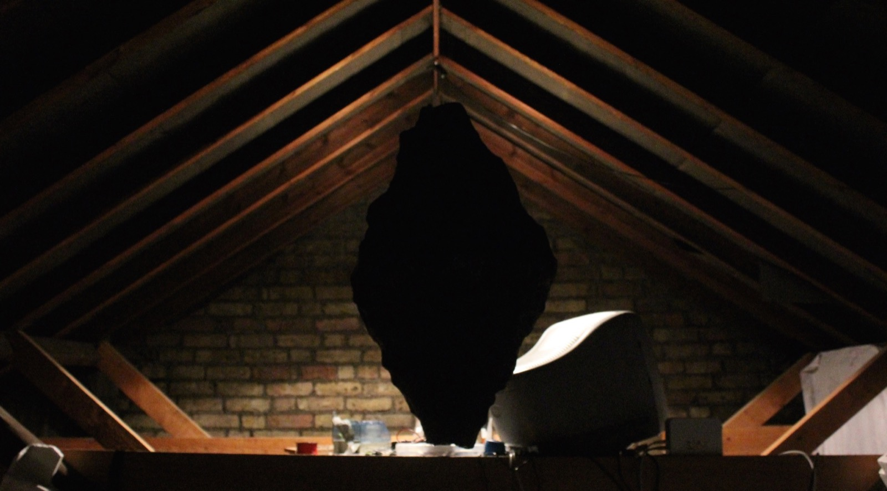
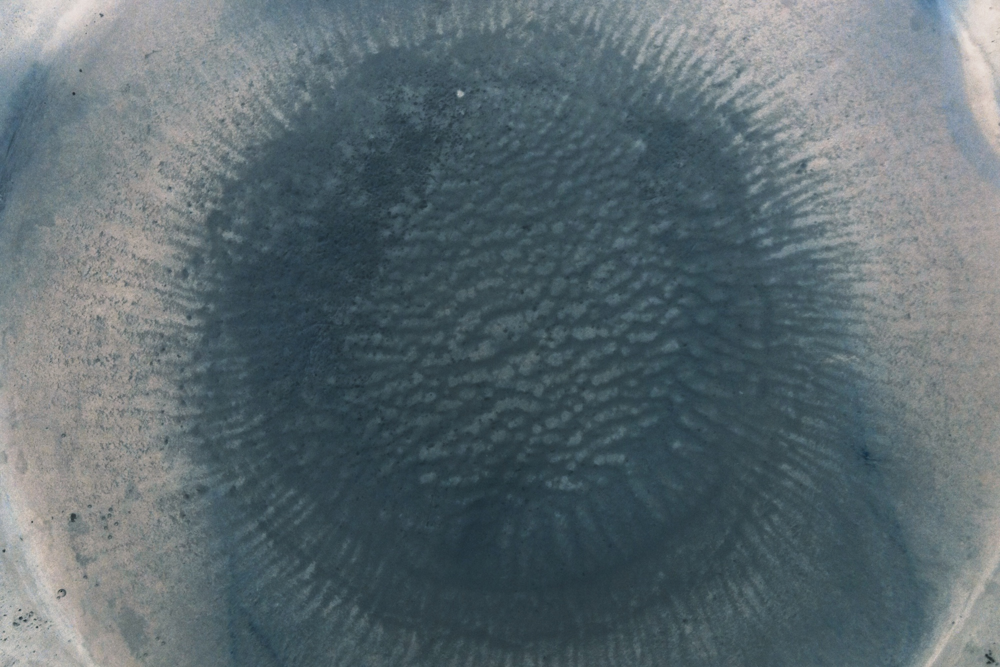
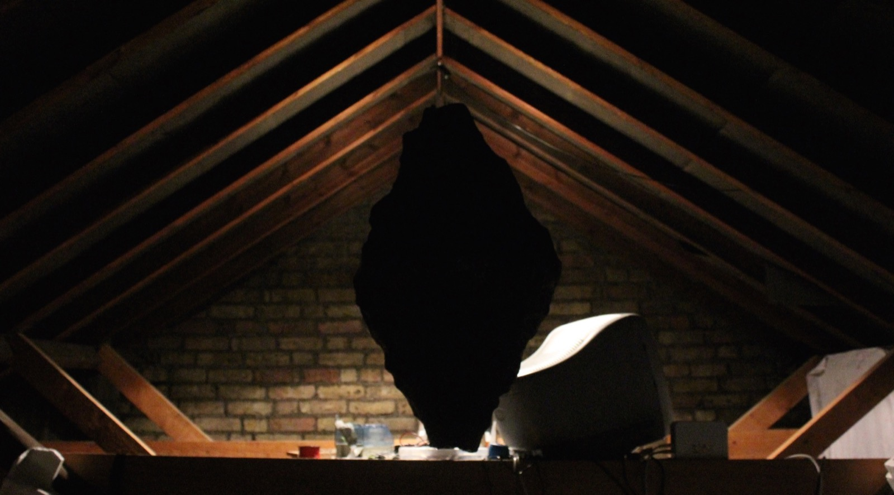
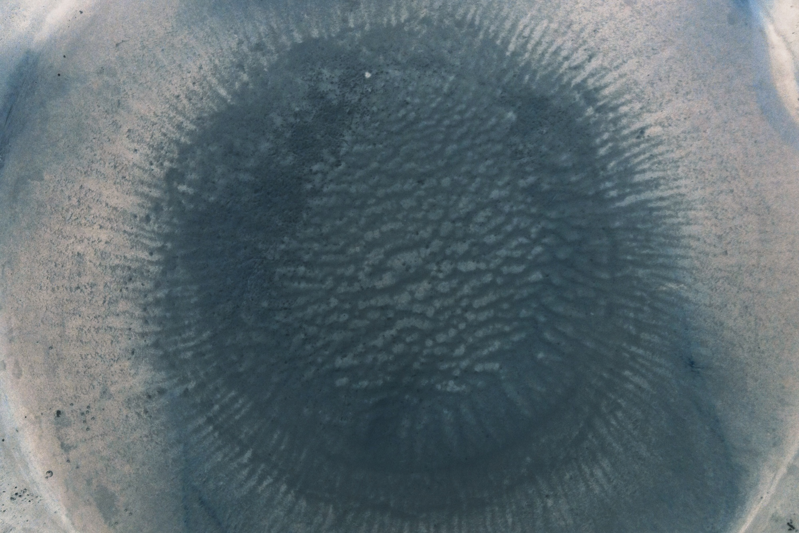

My primary interest has always been sound and music. Here's what I do:
//Theydon Boys ▸
My solo electronic project. Inspired by sampling culture and
ambient music, I create rhythmic downtempo pieces based on organic aesthetics. Currently I'm in the process of devising
a stripped-down conceptual record based on rudimental guitar themes.
In 2015 I've released Two Consecutive Songs, in which I explore the new, blues-based sound.
//Map Series ⇒
Large-scale sound design/compositional work for performance artist Ana Mendes.
Presented in Berlin, Manchester and London. To be performed live at the L'intru — Invaders show at Rich Mix London in Dec. 2015.
Field recording / stitching machines / Ableton Live.
//Das ist Mein Gott ⇒
Soundtracks for a series of short films by Ana Mendes.
Exhibited in Vienna, Berlin.
Field recording / sampling / Ableton Live.
//Growing Things ▸
composition for electric guitar & generative system // based on genetic algorithms and Lindenmayer systems
presented in April 2014 at Goldsmiths College, and performed by Dávid Somló in 2015.
//Ghosts ▸
sound design, reactive composition // ongoing piece based on the disappearance of Amelia Earhart in the late 1930s. Exploring the relationship between events and interpretations via a reactive audio analysis system // intended as a sound installation. Max/MSP.
//Waves ▸
generative composition, electronic // first of my year 2 composition at Goldsmiths // post-serialist piece attempting to juxtapose the ideas of pitch equality and invariant transformation to natural mechanisms of reverberation and material response // static recorded piece. Max/MSP.
//Story Culture ⇒
I sometimes compose and produce royalty-free music for this exciting creative film agency.
//Escape ⇒
A long time ago, I played in/produced a one-of-a-kind christian alternative band in Slovakia.
I also code — mainly for creative and interactive applications, multimedia information retrieval and fun.
//Deep Learning & Audio
My most recent interest is in using powerful deep learning techniques to generate sonic and musical material from raw signal data.
At the moment, the best way to track my progress is on my new blog.
//meyda ⇒
Audio feature extraction library for the Web Audio API that I built with
Hugh Rawlinson and
Nevo Segal.
Featured in proceedings of
the 1st Web Audio Conference
at IRCAM and Mozilla, Paris. Watch the WAC talk here.
//KnowledgeRocks ⇒
I've been working with KnowledgeRocks,
an exciting music education startup, on expanding their iOS/web app portfolio and store.
//1WALL ⇒
My first JavaScript project ever — a collaborative drawing web platform I built using
javascript/Google Maps API/ridiculous geographic projection algorithms. After a reddit—originated explosion,
it is now almost 180 000 colourful pixels wide.
//FRIK ⇒
An audiovisual-literary web epic created by the Hungarian experimental band Dorota. I used Web Audio and hand-crafted CSS3 animation to build an immersive experience of the beautiful world of Frik.
//United Cassettes Map ⇒
An exploratory web app for United Cassettes, a project unifying independent cassette labels all around the world.
Built with the Google Maps API, and some sleek php scripts.
//The Weird Stuff
I've made quite a few (often tragically unfinished) code abominations that I just feel need to exist. Like HorribleCoffee, my early crystallic Blender models, and the first two scenes of a WebGL/WebAudio series called Worlds (scene 2 here, chrome/firefox only, webcam required).
//ripple ⇒
A Tenori-on style MIDI sequencer capable of interfacing with DAWs. Written in openFrameworks.
//minimaltune ⇒
An extremely simple, but fairly accurate OSX guitar tuner app built in Processing.
//Others
I also sometimes contribute to DSP libraries,
write computer vision hacks,
stick my nose into API specs,
and make websites for people, such as Ester Wiesner.
I love working with people and visual spaces — whether it be installations, performances, or community projects.
//Ex Caelis Oblata ⇒
Final dissertation work for the BMus in Music Computing at Goldsmiths. Available in PDF at academia.edu
Installation piece built on research in sculptural encoding of music, exploring the human experiences of mystery, awe and religious reverence and focusing on the concepts of meaning in relics and cultural artefacts, aesthetics of monolithic art.
//The Artist's Rite ⇒
Spin-off performance work based on the aesthetics and technology of Ex Caelis Oblata. In this performance, the artist gradually destroys a precious sculpture of their own making.
// Max/MSP / Jitter / openFrameworks / Nintendo Wii / web camera / laser module / piezo microphone / modroc / cleaver / tape.
//Light Experiments
A new series of visual experiments with wire mesh and laser light, collaboration with Jasmin Michalcakova.
//Veget
I've collaborated with young artists from Bratislava, Slovakia, on an entire summer-spanning series
of events and art-focused activities for kids in the neighbourhood of Dúbravka.
//Others
I also occasionally work with musicians on multimedia and interactive projects, building systems in Max/MSP.

Hi, I'm Jakub. I make sound, I write code, I fill spaces.
twitter ~ @fiala__
github ~ jakubfiala
soundcloud ~ theydonboys
insta ~ @helfarch
linkedin ~ Jakub Fiala
vimeo ~ fiala
~